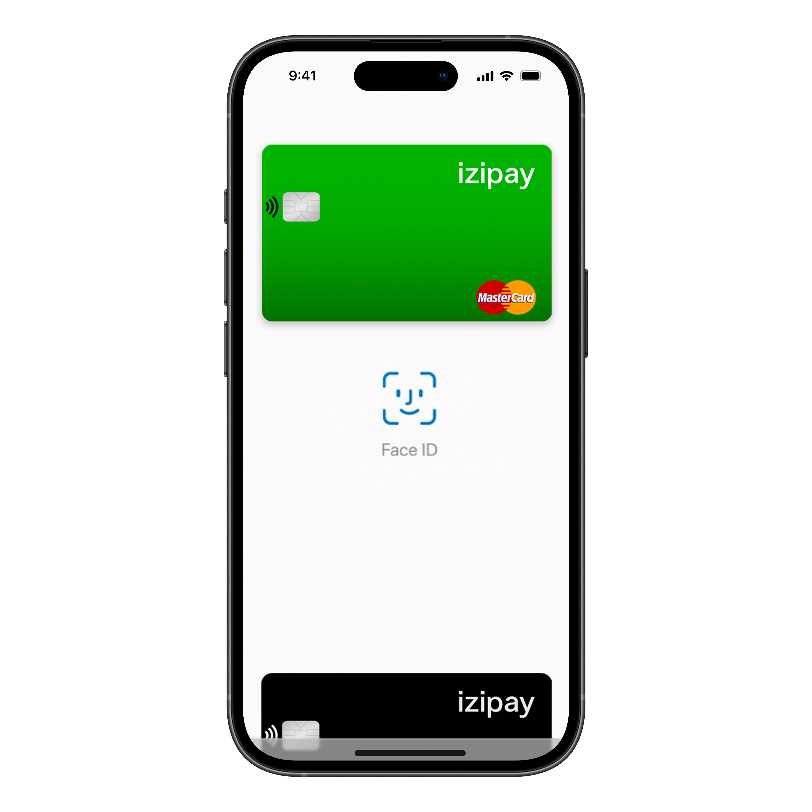

- Мгновенный выпуск: Получите свою виртуальную карту VISA/MasterCard сразу после регистрации.
- Глобальный доступ: Используйте карту для онлайн-покупок, подписок и других платежей — везде, где принимаются VISA/MasterCard.
- Автоматическая конвертация: Оплачивайте напрямую в фиатной валюте, конвертация криптовалюты происходит в реальном времени.
- Безопасные платежи: Передовые технологии шифрования и защиты от мошенничества обеспечивают безопасность ваших средств.
- Онлайн интеграция: Добавьте свою виртуальную карту в Apple Pay или Google Pay и оплачивайте одним касанием.